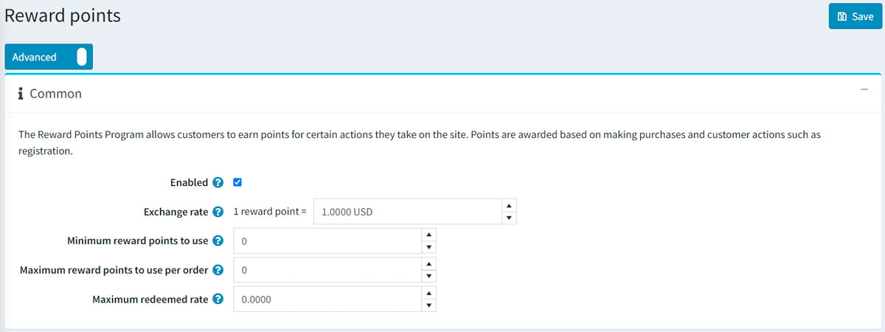
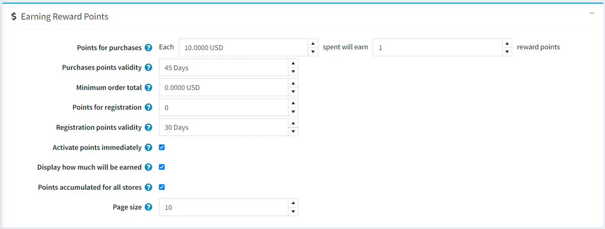
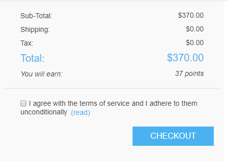
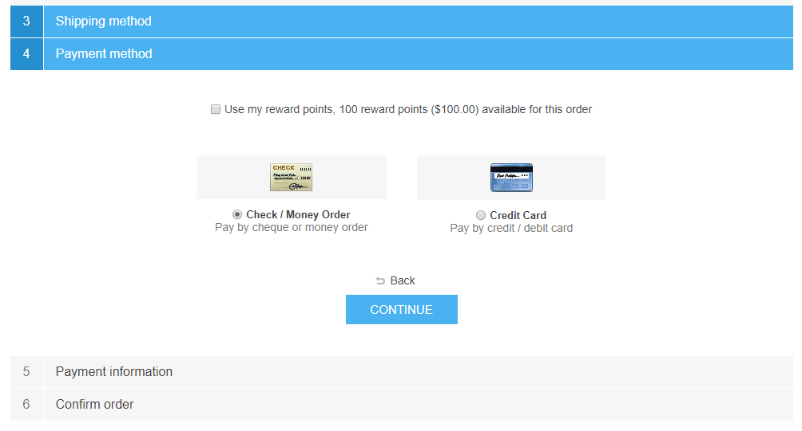

紅利點數
「紅利點數」功能讓您能建立並實作一套顧客忠誠度計畫，以提升顧客體驗並增加顧客忠誠度。紅利點數計畫允許顧客透過在網站上執行特定動作（如註冊及購物）來賺取點數。
紅利點數可用作付款方式之一，此選項會顯示在結帳頁面的付款方式區塊中。可兌換的紅利點數能與其他付款選項合併使用，例如信用卡、禮品卡等。
若顧客取消訂單或發送退貨請求，點數亦可被取消。
管理紅利點數
若要管理紅利點數計畫，請前往 設定 → 設定 → 紅利點數。此頁面提供兩種模式：基礎與進階。
此頁面支援多商店設定，這代表您可以為所有商店定義相同的設定，或為不同商店設定不同的數值。若您想管理特定商店的設定，請從多商店設定下拉式清單中選擇該商店名稱，並勾選左側對應的核取方塊，即可為其設定自訂數值。詳細資訊請參閱 多商店設定。
若要設定您的紅利點數計畫，請定義下列設定：
一般設定

- 勾選 已啟用 核取方塊以啟動紅利點數計畫。
- 在 兌換率 欄位中，指定紅利點數的兌換率（例如：1 點 = $1）。
- 在 可使用的最低紅利點數 欄位中，輸入顧客在可以使用點數前須累積的最低點數。若您不需要設定此項，請輸入 0。
- 若您指定了 每筆訂單最高可使用紅利點數 欄位，顧客在每筆訂單中將無法使用超過 X 點的紅利點數。若不想使用此設定，請設為 0。
- 最高折抵比例 設定限制了可使用紅利點數支付的訂單總額上限（百分比）。例如，若設為 0.6，則訂單總額的 60% 可透過紅利點數支付，但不得超過 每筆訂單最高可使用紅利點數 的限制。若不想使用此設定，請設為 0。
賺取紅利點數

- 在 購物贈送點數 欄位中，指定購物可獲得的點數數量。
- 在 購物點數有效期限 欄位中，指定購物所獲點數的有效天數。預設值為
45天。若您指定數值為0，則紅利點數將永久有效。 - 在 最低訂單總額 欄位中，指定購物贈送點數的最低訂單金額（不含運費）。
- 在 註冊贈送點數 欄位中，指定顧客註冊可獲得的點數數量。
- 在 註冊點數有效期限 欄位中，指定註冊所獲點數的有效天數。
- 若您希望顧客在賺取點數後即可立即使用，請勾選 立即啟用點數 核取方塊。若取消勾選此項，將會出現另一個選項：
- 在 紅利點數啟用時間 核取方塊中，指定紅利點數啟用前的等待期間（天數/小時數）。
- 勾選 顯示將可獲得的點數 核取方塊，以向顧客顯示他們即將獲得多少點數。此資訊將顯示在結帳頁面上。
- 勾選 所有商店累計點數 核取方塊，以便將所有商店的紅利點數累計在同一個餘額中，使其能在任何商店使用。
- 在 頁面大小 欄位中，設定「我的帳戶」頁面中紅利點數歷史記錄的分頁大小。
點擊 儲存。
Note
紅利點數僅適用於已註冊的顧客。
當顧客在結帳時使用紅利點數，介面呈現如下：

